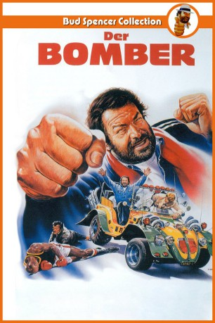

#4381 Der Bomber
 
 IMDB-Wertung: 6.3 / 10
IMDB-Wertung: 6.3 / 10  Metascore: 0
Metascore: 0 
Nachdem der alte Seebär Bud Graziano - genannt der Bomber - von seinem alten Schiff geworfen wurde und nirgendwo eine neue Heuer zu kriegen ist, versucht er sich als Boxtrainer einer absolut hoffnungslos unbegabten Truppe. Diese versucht, um ihre Schulden loszuwerden, ein von der Mafia gesponsertes Spitzensportlerteam zu schlagen. Als sich selbst Buds größte Kämpfer-Hoffnung als Geldeintreiber auf die Seite der Mafia schlägt, bleibt dem Bomber keine Wahl: Er selbst steigt wieder in den Ring… und seinen schlagenden Argumenten ist niemand gewachsen!
Jahr: 1982
Dauer: 100 Minuten
FSK: 6
Land: Studio: Jugendfilm-VerleihTonspuren:
Untertitel:
Auflösung: 1080p (1920x1080) Größe: 8243 MB
Genre: Komödie, Action, Krimi
Regisseur: Michele Lupo
Drehbuch: Ed Decter
Soundtrack:
Darsteller:
 Bud Spencer als Bud Graziano
Bud Spencer als Bud Graziano- Nando Paone als Ossario
 Rik Battaglia als
Rik Battaglia als - Giorgio Vignali als
 Pietro Torrisi als Thug , uncredited
Pietro Torrisi als Thug , uncredited- Jerry Calà als Jerry
- Stefano Mingardo als Giorgio Desideri, Giorgione
- Kallie Knoetze als Rosco Dunn
- Gegia als Susanna
 Valéria Cavalli als Claudia
Valéria Cavalli als Claudia- Ferdinando Murolo als Krupp
- Bobby Rhodes als Newman
- Angela Campanella als
- Francesco D'Adda als
- Piero Del Papa als
- Vincenzo Maggio als Referee
- Maurizio Tori als
- Piero Trombetta als
 Salvatore Basile als Spectator in the meetings , uncredited
Salvatore Basile als Spectator in the meetings , uncredited- Giancarlo Bastianoni als Thug , uncredited
- Angelo Boscariol als Man in Restaurant , uncredited
 Omero Capanna als Marine , uncredited
Omero Capanna als Marine , uncredited- Giovanni Cianfriglia als Thug , uncredited
- Arnaldo Dell'Acqua als Thug , uncredited
 Ottaviano Dell'Acqua als Thug , uncredited
Ottaviano Dell'Acqua als Thug , uncredited- Paolo Gozlino als Captain , uncredited
- Mario Mattioli als Cronista , uncredited
- Benito Pacifico als Thug , uncredited
 Nello Pazzafini als Bar's Client , uncredited
Nello Pazzafini als Bar's Client , uncredited- Giuseppe Pedersoli als Soldier from Rosco Dunn , uncredited
- Osiride Pevarello als Cook , uncredited
- Mimmo Poli als Cook , uncredited
- Sergio Smacchi als Marine , uncredited
Datei: X:\Person\Bud Spencer + Terence Hill\Bomber, Der (1982, FSK6, 1920x1080).mkv seit 13.09.2016
Festplatte: HD Collection-7+mehr(A-Z)+Person
 Es gibt insgesamt 43 Filme in der Gruppe 'Person\Bud Spencer + Terence Hill'
Es gibt insgesamt 43 Filme in der Gruppe 'Person\Bud Spencer + Terence Hill'